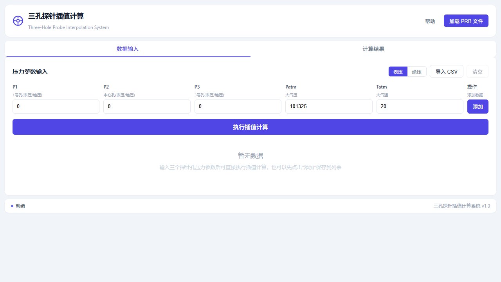
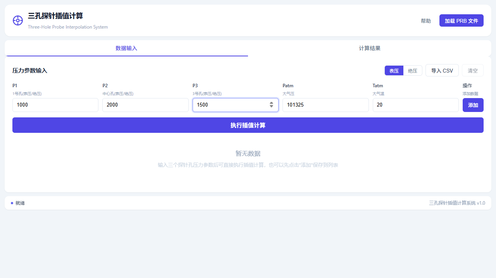
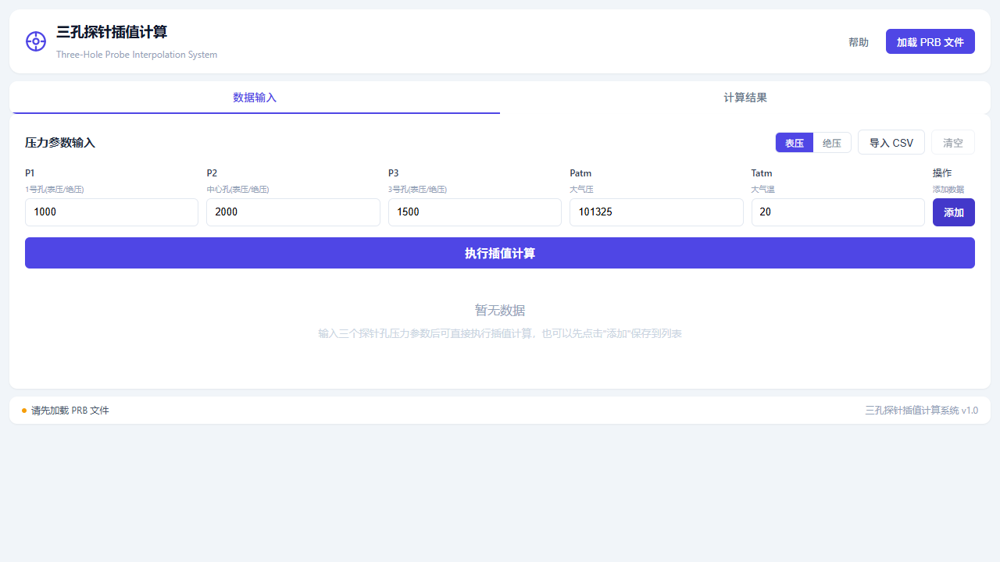
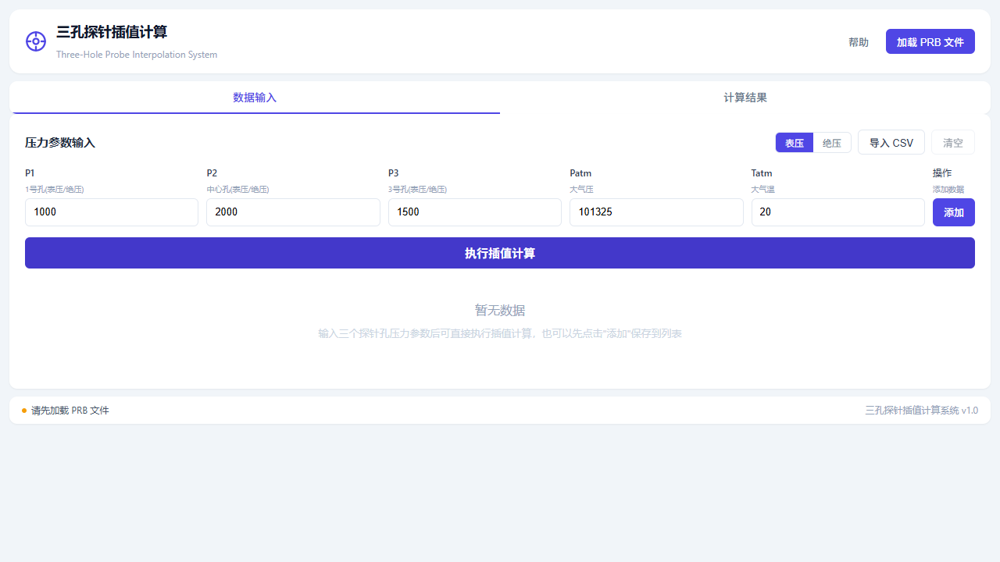

三孔探针插值计算系统
用户说明书
版本: v1.0 | 适用于风洞试验工程师
📖1. 系统概述
三孔探针插值计算系统是一款专业的风洞试验数据处理工具，用于根据三孔探针的测量数据计算气流参数，包括：
- 攻角 (α)：气流方向与探针轴线的夹角，单位：度 (°)
- 马赫数 (Ma)：气流速度与声速的比值，无量纲
- 总压 (Pt)：气流的总压，单位：帕斯卡 (Pa)
- 静压 (Ps)：气流的静压，单位：帕斯卡 (Pa)
系统采用迭代二维插值算法，基于 PRB 校准文件对三孔探针测量数据进行精确计算，支持单点手动输入和批量 CSV 导入两种数据输入方式。
本系统适用于风洞试验中使用三孔探针进行气流参数测量的场景，可处理表压或绝压模式的测量数据。
🖥️2. 界面介绍
系统主界面分为以下几个区域：

图 2-1 系统初始界面
2.1 顶部标题栏
- 系统名称：左侧显示"三孔探针插值计算"及英文名称
- 帮助按钮：点击可打开本用户说明书
- 加载 PRB 文件按钮：用于加载校准文件（必需步骤）
2.2 信息卡片
加载 PRB 文件后，系统会显示信息卡片，包含：
- 已加载的 PRB 文件数量及文件名
- 各文件对应的马赫数
- 系统状态（就绪/未就绪）
2.3 标签页
- 数据输入：输入探针测量数据和查看数据列表
- 计算结果：查看插值计算结果（需先完成计算）
2.4 状态栏
底部状态栏显示当前操作状态和系统版本信息。
📝3. 操作流程
加载 PRB 校准文件
点击顶部"加载 PRB 文件"按钮，在弹出的文件选择对话框中选择一个或多个 .prb 校准文件。
PRB 文件是三孔探针的校准数据文件，包含不同马赫数下的 Kb、Kt、Sb、Alpha 等校准系数。
必须先加载 PRB 文件才能进行计算。系统需要至少一个 PRB 文件才能正常工作。
选择压力模式
在"压力参数输入"区域右上角，选择压力输入模式：
- 表压：输入相对于大气压的压力差值（默认模式）
- 绝压：输入绝对压力值，系统会自动减去大气压进行计算
输入压力参数
在输入区域填写以下参数：
| 参数 | 说明 | 默认值 |
|---|---|---|
| P1 | 1号孔压力（侧孔） | 0 |
| P2 | 中心孔压力 | 0 |
| P3 | 3号孔压力（侧孔） | 0 |
| Patm | 大气压 | 101325 Pa |
| Tatm | 大气温度 | 20 °C |

图 3-1 填写压力参数示例
添加数据到列表（可选）
点击"添加"按钮将当前输入的数据保存到数据列表中。您可以添加多行数据进行批量计算。
如果不添加到列表，也可以直接点击"执行插值计算"进行单点计算。

图 3-2 数据列表显示
执行插值计算
点击"执行插值计算"按钮，系统将自动进行迭代插值计算。
计算过程中按钮会显示"计算中..."，请耐心等待。

图 3-3 计算进行中
查看计算结果
计算完成后，系统会自动切换到"计算结果"标签页，显示以下结果：
| 结果项 | 说明 | 单位 |
|---|---|---|
| α (°) | 攻角 | 度 |
| Ma | 马赫数 | 无量纲 |
| Pt (Pa) | 总压 | 帕斯卡 |
| Ps (Pa) | 静压 | 帕斯卡 |
无效行的数值列（α、Ma、Pt、Ps）统一显示为"-"，不展示具体数值，避免与有效行结果混淆；状态列显示"无效"标签，鼠标悬停可查看具体原因。

图 3-4 计算结果展示
📁4. 数据文件批量导入
系统支持通过数据文件批量导入数据进行计算，提高数据处理效率。支持 CSV（逗号分隔）和 TXT（制表符分隔）两种格式。
4.1 数据文件格式要求
数据文件必须包含以下列（列名区分大小写）：
| 列名 | 说明 | 是否必需 |
|---|---|---|
| P1 | 1号孔压力 | 是 |
| P2 | 中心孔压力 | 是 |
| P3 | 3号孔压力 | 是 |
| Patm | 大气压 (Pa, 绝压) | 是 |
| Tatm | 大气温度 (K) | 是 |
4.2 数据文件示例
P1,P2,P3,Patm,Tatm 1000,2000,1500,101325,293.15 1200,2200,1700,101325,293.15 800,1800,1300,101325,298.15
4.3 导入步骤
- 确保已加载 PRB 校准文件
- 点击"导入数据"按钮
- 在文件选择对话框中选择数据文件
- 系统自动解析并导入数据到列表
- 点击"执行插值计算"进行批量计算
导入数据文件时，系统会自动跳过格式错误的行，并在状态栏显示导入结果和警告信息。
文件支持 Tab 制表符或逗号作为列分隔符，系统会自动检测。以 # 开头的行会被当作注释自动跳过。
💾5. 结果导出
计算完成后，您可以将结果导出为 CSV 文件：
- 切换到"计算结果"标签页
- 点击右上角的"导出 CSV"按钮
- 选择保存位置，系统自动生成带时间戳的文件名
导出文件包含以下列：序号、α(°)、Ma、Pt(Pa)、Ps(Pa)、状态（无效行数值列以"-"占位）
文件名格式：三孔探针计算结果_YYYY-MM-DD_HH-MM-SS.csv
🗑️6. 数据管理
6.1 删除单条数据
在数据列表中，点击每行末尾的"[X]"按钮即可删除该条数据。
6.2 清空所有数据
点击"清空"按钮可一次性删除所有输入数据和计算结果。
清空操作不可撤销，请确认后再执行。
❓7. 常见问题
Q1: 为什么提示"请先加载 PRB 文件"？
PRB 校准文件包含探针的校准系数，是进行插值计算的必要条件。必须先加载至少一个 PRB 文件才能进行计算。
Q2: 表压和绝压有什么区别？
表压是相对于大气压的压力差值（如压力表读数）；绝压是相对于真空的压力绝对值。选择错误的模式会导致计算结果偏差。
Q3: 计算结果显示"无效"是什么原因？
可能的原因包括：
- 压力差值接近零，无法计算 Kb 系数
- 马赫数超出校准文件的范围
- Kb 值超出校准数据范围，使用了外推
- 迭代计算未收敛
Q4: 可以加载多个 PRB 文件吗？
可以。系统支持同时加载多个不同马赫数的 PRB 文件，插值计算时会自动在相邻马赫数之间进行插值。
Q5: 数据文件导入失败怎么办？
请检查：
- 文件编码是否为 UTF-8
- 是否包含必需的 P1、P2、P3、Patm、Tatm 列
- 数值格式是否正确（不要使用逗号作为千位分隔符）
- 文件是否被其他程序占用
- 压力模式由 UI 切换按钮指定，数据文件中无需包含 PressureMode 列
⚙️8. 技术参数
| 参数 | 说明 | 数值 |
|---|---|---|
| 最大迭代次数 | 插值计算最大迭代次数 | 20 次 |
| 收敛容差 | 马赫数收敛判断标准 | 1e-4 |
| 压力差容差 | 判断压力差是否接近零 | 1e-6 |
| 比热比 | 空气比热比 k | 1.4 |
| 支持文件格式 | 校准文件格式 | .prb |
| 导入格式 | 批量数据导入格式 | .csv, .txt |
| 导出格式 | 结果导出格式 | .csv |
⚠️9. 注意事项
- 请确保输入的压力数据单位统一（建议使用帕斯卡 Pa）
- 温度输入单位为开尔文 (K)
- PRB 校准文件必须与探针型号匹配
- 计算结果超出校准范围时，精度可能会降低
- 建议定期保存计算结果，避免数据丢失
- 大气压默认值 101325 Pa 为标准大气压，实际使用时请根据试验环境调整
本系统仅用于数据处理和分析，不直接控制试验设备。进行风洞试验时，请遵守相关安全操作规程。
📞10. 技术支持
如在使用过程中遇到问题，请联系技术支持团队。
建议提供以下信息以便快速定位问题：
- 系统版本号（见底部状态栏）
- PRB 校准文件信息
- 输入数据示例
- 错误提示信息